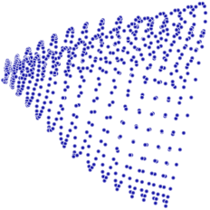

make motion detection straightforward
makes things more difficult:
we require prior information
sufficiently general to admit all possible motions
<>
strong enough to resolve ambiguities
activity specific models from motion capturing
Problem: Pose and motion data is extremely high dimensional, difficult to visualize and expensive to compute on.
maximum a posterior probable motion distribution
\(p(x_{1:t}|z_{1:t}) = p(z_{1:t}|x_{1:t})p(x_{1:t}) / p(z_{1:t})\)
time \(t\), states \(x_{1:t}\), observations \(z_{1:t}\)
\(\rightarrow\) to complex to calculate
limited range of motion in each joint detected poses need to satisfy valid biomechanics can be used to capture plausibility of pose estimates
every new pose equals the old pose with some added noise
\(y_{t+1} = y_{t} + \eta\)
\(y_{t+1} = y_{t} + \kappa(y_t - y_{t-1}) + \eta\)
collected using off-line motion capturing
\(\mathbb{D} = \{y^{(i)}\}_{i=1,...,\mathcal{N}}\)
\(y^{(i)} \in \mathcal{R}^D\)
N poses y each consisting of D joint angles
activities exhibit strong regularities
\(\rightarrow\) data from a single activity is likely to be clustered
\(\rightarrow\) eigen-poses can be constructed for complexity reduction
\(m = (y_1,...,y_m)\)
linear combination of mean motion and eigen-motions
\[m \approx \mu + \Sigma_{j=1 \rightarrow B} x_j b_j\]

periodic motions follow a cyclic trajectory in high dimensionality
linear models require many dimensions to appropriately span the data
nonlinear manifolds can model those structures better
univariate \(\rightarrow\) multivariate \(\rightarrow\) processes
utilizes gaussian processes to predict samples from latent variables
optimize likelihood of correct latent space \(\rightarrow\) pose space mapping
good prior is essential, commonly uses PCA
GPLVM is sampled from independent training data -- ignores temporal relations
intuition for the latent space gets lost because of missing spatial proximity
smooth pose trajectories \(\rightarrow\) smooth latent trajectories
required for accurate predictions and tracking
GPDM is initialized using GP prior over latent trajectories
weighted sum over individual models with side information available